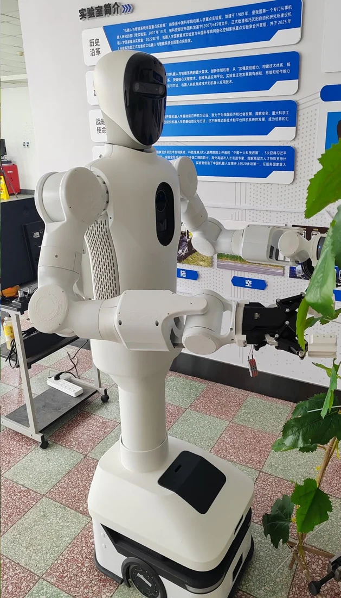

AI 跨设备自动化
基于 OpenClaw 与远程节点，探索通过飞书入口调度 Windows / Linux 设备的自动化工作流。

每项列出个人参与内容；展开可查看具体工作。
14 项参与项目与子课题，包含在研工作；参与范围各不相同，不代表全部已结题，也不将共享成果重复计数。
空间机器人
参与双臂模型与运动学调试，处理实际关节安装角度与模型关节坐标之间的对应问题，支持控制系统联调。
TOSOR
围绕 Sigma.7 主端、末端六维力传感器和机械臂搭建遥操作及力呈现链路，参与导纳控制、传感器通信与坐标系对齐调试。
医疗机器人
参与基于 Diana7 和六维力传感器的柔顺运动控制研发，围绕定平面／定直线拖动、虚拟边界约束、接触反弹与振动开展实验和总结。相关论文研究属于前沿算法探索，未直接应用于项目交付系统。
早期实验代码移动双臂
参与人形上肢控制软件部署和双臂、移动底盘、传感器的集成联调，为多模态自主操作建立实验平台。
机器工人子课题
承担系统控制相关工作，参与仿人上肢、双臂与灵巧手的控制调试及实验平台搭建。工作随项目阶段持续推进。
机器工人子课题
参与穿戴式外骨骼的重力补偿、位置／力映射与软件部署，连接移动双臂机器人、示范数据采集和技能学习框架，推进接触任务的训练与部署验证。
工业机器人
参与项目中的插件开发工作。
医疗机器人
项目分工中列为主要参与人；此处记录参与关系，具体技术职责随项目推进补充。
华威科合作项目
针对项目执行中的运动控制问题提供技术支持与指导。
工业机器人
执行文件列为项目参与人员；具体承担内容待进一步形成可公开的项目记录。
研究方法、系统工具与 AI 实践。ROCOS 为团队项目。
基于 OpenClaw 与远程节点，探索通过飞书入口调度 Windows / Linux 设备的自动化工作流。
阶段感知技能图与可提示控制。
可执行语义描述与 CLIP-LLM 任务规划。
团队机器人控制、仿真与可视化平台。
六维力传感器负载参数标定与重力补偿。
机器人仿真运动控制与运动学实验。
机械臂轨迹暂停与恢复的控制实验。
基于 MoveIt 2 的手眼标定软件。